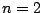
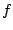

The speaker will present a new theory, the related algorithmic and programming architecture for solving nonlinear boundary value problems with optimal speed and robustness by using large numbers of finite elements.
The new methodology will achieve the desired optimality over a singularly large spectrum of nonlinear finite element models on bounded domains of with  and . For example, the algorithm will cover the Galerkin formulation of well-posed nonlinear elliptic systems whose principle part is Lipschitz continuous and strongly monotone in a Sobolev space and certain problems that lack unique solutions such as stationary Navier-Stokes equations. Large variations of stiffness will also be permitted in both magnitude and frequency.
The merit of the new algorithm is not only its speed and scope, but also its mathematically rigorous theory, the elegance in algorithmic design, and simplicity in implementation. The approach will be based on the proven success of the speaker's long time effort starting from early 1990s, recently reported in [1], which successfully establishes the corresponding result for second order quasi-linear elliptic systems with non-negative lower order terms.
Central to the algorithm, the speaker will reformulate a finite element model by generalized Wiener-Hopf equations. This will make element-wise conditioning an inexpensive process, whereby reducing the solution procedure to the straightforward Banach contraction mapping principle: given , and , compute
For a
large class of practical problems, they can also be
accomplished by a variety of other linear solver techniques,
showing the robustness of the algorithm. From the numerical
point of view,  and are optimal conditioners of
and are optimal conditioners of  in terms of cost, efficiency and robustness. They depend
only on a discrete function space modulo the kernel of an
appropriate linear analog of
in terms of cost, efficiency and robustness. They depend
only on a discrete function space modulo the kernel of an
appropriate linear analog of  . Throughout the algorithmic
design and analysis, non-traditional tools such as
topological spaces and discrete measures will be
systematically deployed for representing and handling the
data structure. This is another novelty of the speaker's
approach from the standard methodology.
. Throughout the algorithmic
design and analysis, non-traditional tools such as
topological spaces and discrete measures will be
systematically deployed for representing and handling the
data structure. This is another novelty of the speaker's
approach from the standard methodology.
The speaker's new approach is related neither to Newton-Krylov method and its variants, nor to FAS. At the philosophical level, it is a natural extension of AMG to its fully nonlinear analog without using FAS. It can also be viewed as an extreme exercise of the finite element tearing and inter-connection (FETI) philosophy coupled with a novel treatment of degrees of freedom.
[1] P. Shi, Foundation of nonlinear finite element solvers, Part I, Advances in Computational Mathematics, submitted August 2005, 95 pages.